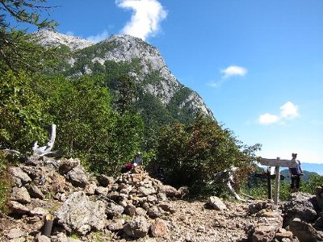
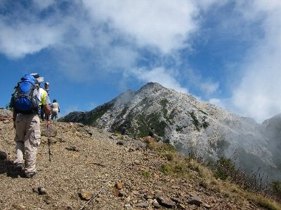
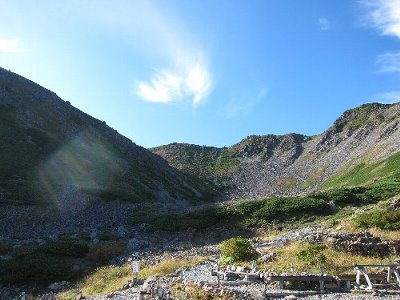

甲斐駒ケ岳＆仙丈岳登山 | 2011年9月 |
|---|---|
| 甲斐駒ケ岳と仙丈岳は、南アルプスの北寄りに位置し、それぞれ日帰り登山（北沢峠より）が可能な山として人気が有ります。もちろん景観が良いというのも人気の一つです。 今回は、友人とそんな山に行きました。（昨年の「鬼軍曹」参照）私は、数年前に仙丈岳には登ったのですが、甲斐駒ケ岳は初めてです。 二人山行のため、今回もテント泊です。北沢峠には、近くに北沢駒仙小屋（テント場あり）がありましてそこから、それぞれの山に行くのに便利です。 しかも、北沢峠まではバスなので、荷物を沢山持っていっても、登山中は日帰り用ザックだけで良いという、なんともナイスな場所なのです。 問題はバスです。南アルプスはマイカー規制も多く、登山者はバスでアプローチしなくてはなりません。だから土曜日早朝のバスなどは、乗れないくらいに混みあいます。 まずは、芦安の駐車場から広河原まで１本目のバス（山梨交通）。５時40分のバスに何とか乗れましたが、すでに乗れない人が出ました。 そして、広河原から北沢峠までのバス（市営バス）。すでに一杯過ぎて乗れなかったのですが、増便しているとの事で、30分ほどで乗れました。北沢峠になんとか8時前に着。 ここで遅れが出ると、本日の山行予定が狂ってしまうので（日帰り出来なくなるかも）重要です。 | |
 北沢駒仙小屋から仙水峠までの道。前半はこんな感じ |  仙水峠からの甲斐駒ヶ岳 |
| 北沢駒仙小屋に到着して、受付＆テント設営後、直ぐに登山開始です。本日は甲斐駒ケ岳（2970m）です。8時半出発で、歩行予定時間は7時間です。16時までには戻ってきたいけど、きついかな？ 天気は今のところ快晴です。 まずは仙水峠まで。ここまでのルートは、はじめ樹林帯、そして石ゴロゴロエリアです。仙水峠から甲斐駒ケ岳がよく見えます。迫力が有ってカッコいいです。 しかし、傾斜きつそうだなと、どこ登るのかな？と不安も有ります。 そして、ここから駒津峰までが急登で、坂道きついです。駒津峰からも真正面に甲斐駒がデーンって見えます。このころから甲斐駒に雲が覆い始めました。 巻き道を通って、摩利支天により道して、昼食タイム。 甲斐駒ケ岳の頂上付近は、白い花崗岩でとっても綺麗ですが、砂のようになっていて歩くの疲れます。そして眩しい(笑) | |
|  駒津峰からの甲斐駒ヶ岳 |  同じく駒津峰からの甲斐駒ヶ岳。右が摩利支天 |
| 結局、甲斐駒ケ岳山頂（2970m）到着が13時過ぎです。ちょっと遅いね。しかも雲の中で、辺りは真っ白。何も見えません(T_T) ま、甲斐駒ヶ岳も日本百名山らしいので、これでまた一つ制覇。 つまらないから、早々に下山。帰りは双児山経由です。コースタイムだと下山はこちらの方が早いんですよ。しかし、駒津峰から急激に下ったと思ったら、今度は登り。まだ登るのかと、いい加減くたびれた頃に、やっと双児山です。予想より登りが多かった。 その後もダラダラと下りながら、北沢峠に着いたのは17時直前でした〜 休憩が多かったのか、予想より時間かかったな。 小屋に行って、ビール買って、テント戻って、夕食タイム。 荷物を多く持っていっても大丈夫なので、おつまみに「レトルトおでん」を持参しました。お湯で温めればOKって奴。やっぱり、涼しくなると暖かいもの欲しいし、ビールのつまみも欲しいしね。 メインは、例のごとくレトルトカレーとアルファ米。もってきた日本酒も飲んでご機嫌です。（去年はこの後に腹を壊したんだった。今回は大丈夫だったけど） | |
 摩利支天への寄り道コース。この道白くて眩し〜 |  甲斐駒ヶ岳に着いたらまっ白。(×_×;） |
| 翌日は仙丈岳です。 、帰宅時間を遅くしないためには（次の日仕事だし）、13時頃出発のバスに乗りたい。歩行予定時間は約７時間なので、5時に出発しよう！ って事で、また3時45分起床。 朝食におにぎりと味噌汁、コーヒーを飲んで出発。さすがに、峠の朝5時は暗い。 行きは大平山荘ー薮沢コースから登りました。大平山荘では危うく道を間違いそうになり、小屋のおじさんに教えてもらいました。そーいえば、前回もここで間違った気がします。 はじめは沢沿いだけど、沢は見えず、樹林帯を歩いていきます。1時間以上歩いて沢沿いになり、花を愛でながら気持ちがよくなります。 しかし、鬼軍曹はバスの時間を気にしてか、「写真は歩きながら撮ってください。止まらないで」と厳しいお言葉。 馬の背ヒュッテを通り過ぎ、8時過ぎに仙丈小屋に到着です。あ、途中で雷鳥みました。 いや〜天気も良いし、景色良いな〜。昨日登った甲斐駒ケ岳もよく見えます。しばし、休憩して仙丈岳へ。尾根に出ると、中央アルプスが望めました。 | |
 仙丈小屋からの景色。空が広くて気持ちいい♪ |  仙丈小屋から見る仙丈岳 |
| ８時45分に仙丈岳山頂です。結構人居ますね。小屋からの人かな？ 天気も良く、北岳や富士山が見えました。しかし、徐々に下から雲が登って来て、景色を奪っていきます。 景色が良い山頂って気持ちが良いです。しばらく、ボ〜としていたい。しかし、帰りのバスの時間が・・・。後ろ髪引かれる思いで下山します。 帰りは小仙丈岳経由です。仙丈岳のカールをゆっくり眺めながら。カールも綺麗だな〜 大滝の頭を過ぎると、樹林帯に入るため景観が無くなり、つまらなくなります。ドンドン降りるだけ。おばさん集団が道を譲ってくれたけど、おばさん集団も降りるの早いのね。追いつかれないように、こちらも必死！ せっかく譲ってくれたのに、追い抜かれるようじゃ情けないもの。 北沢峠まで行くつもりが、北沢峠経由しないで、テント場に行ける道を発見し、そちらを通って30分ほど時間短縮。お陰でテント撤収（テント干し時間）時間が稼げました。 帰りもバスは臨時増発があり、また広河原からは乗り合いタクシーの乗れたので、14時には芦安駐車場に到着し、温泉入って帰る事が出来ました。 夜を明かすにはイマイチ楽しめない（景観が良くない）北沢峠ですが、その分楽できます♪ 来年は北アルプスか？ | |
 仙丈岳から見る北岳と富士山。真ん中左よりの小さいのが富士山 |  帰り道から仙丈岳 |
| 写真＆コメント ｂｙ べっしー | |